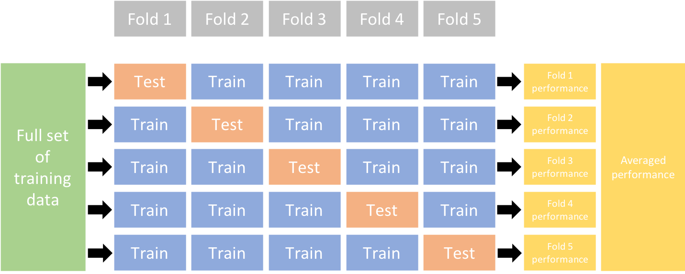

Regularization
Fundamentals of Machine Learning for NHS using R
A New Dataset

Ames Housing
Ask a home buyer to describe their dream house, and they probably won’t begin with the height of the basement ceiling or the proximity to an east-west railroad. But this playground competition’s dataset proves that much more influences price negotiations than the number of bedrooms or a white-picket fence.
Dataset Overview
- 2,930 observations
- 82 variables
sale_priceis the target variable
Dataset Variables
| Variable Name | Type | Description |
|---|---|---|
order |
Numeric | Unique observation ID |
pid |
Nominal | Parcel identification number - can be used with city web site for parcel review |
ms_subclass |
Nominal | Identifies the type of dwelling involved in the sale
|
ms_zoning |
Nominal | Identifies the general zoning classification of the sale
|
lot_frontage |
Numeric | Linear feet of street connected to property |
lot_area |
Numeric | Lot size in square feet |
street |
Nominal | Type of road access to property
|
alley |
Nominal | Type of alley access to property
|
lot_shape |
Nominal | General shape of property
|
land_contour |
Nominal | Flatness of the property
|
utilities |
Nominal | Type of utilities available
|
lot_configuration |
Nominal | Lot configuration
|
land_slope |
Nominal | Slope of property
|
neighborhood |
Nominal | Physical locations within Ames city limits
|
condition_1 |
Nominal | Proximity to various conditions
|
condition_2 |
Nominal | Proximity to various conditions (if more than one is present)
|
building_type |
Nominal | Type of dwelling
|
house_style |
Nominal | Style of dwelling
|
overall_quality |
Nominal | Rates the overall material and finish of the house
|
overall_condition |
Nominal | Rates the overall condition of the house
|
year_built |
Numeric | Original construction date |
year_remod_add |
Numeric | Remodel date (same as construction date if no remodeling or additions) |
roof_style |
Nominal | Type of roof
|
roof_material |
Nominal | Roof material
|
exterior_1 |
Nominal | Exterior covering on house
|
exterior_2 |
Nominal | Exterior covering on house (if more than one material)
|
masonry_veneer_type |
Nominal | Masonry veneer type
|
masonry_veneer_area |
Numeric | Masonry veneer area in square feet |
exterior_quality |
Nominal | Evaluates the quality of the material on the exterior
|
exterior_condition |
Nominal | Evaluates the present condition of the material on the exterior
|
foundation |
Nominal | Evaluates the present condition of the material on the exterior
|
basement_quality |
Nominal | Evaluates the height of the basement
|
basement_condition |
Nominal | Evaluates the general condition of the basement
|
basement_exposure |
Nominal | Refers to walkout or garden level walls
|
basement_fin_type_1 |
Nominal | Rating of basement finished area
|
basement_area_type_1 |
Numeric | Type 1 finished square feet |
basement_fin_type_2 |
Nominal | Rating of basement finished area (if multiple types)
|
basement_area_type_2 |
Numeric | Type 2 finished square feet |
basement_unfinished_area |
Numeric | Unfinished square feet of basement area |
basement_total_area |
Numeric | Total square feet of basement area |
heating |
Nominal | Type of heating
|
heating_quality |
Nominal | Heating quality and condition
|
central_air |
Nominal | Heating quality and condition
|
electrical |
Nominal | Heating quality and condition
|
first_floor_area |
Numeric | First Floor square feet |
second_floor_area |
Numeric | Second floor square feet |
low_quality_finished_area |
Numeric | Low quality finished square feet (all floors) |
ground_living_area |
Numeric | Above grade (ground) living area square feet |
basement_full_bathrooms |
Numeric | Basement full bathrooms |
basement_half_bathrooms |
Numeric | Basement half bathrooms |
full_bathrooms |
Numeric | Full bathrooms above grade |
half_bathrooms |
Numeric | Half baths above grade |
bedroom_above_ground |
Numeric | Bedrooms above grade (does NOT include basement bedrooms) |
kitchen_above_ground |
Numeric | Kitchens above grade |
kitchen_quality |
Nominal | Kitchen quality
|
total_rooms_above_ground |
Numeric | Total rooms above grade (does not include bathrooms) |
functional |
Nominal | Home functionality (Assume typical unless deductions are warranted)
|
fireplaces |
Numeric | Number of fireplaces |
fireplace_quality |
Nominal | Fireplace quality
|
garage_type |
Nominal | Garage location
|
garage_year_built |
Numeric | Year garage was built |
garage_finish |
Nominal | Interior finish of the garage
|
garage_cars |
Numeric | Size of garage in car capacity |
garage_area |
Numeric | Size of garage in square feet |
garage_quality |
Nominal | Garage quality
|
garage_condition |
Nominal | Garage condition
|
paved_drive |
Nominal | Garage condition
|
wood_deck_area |
Numeric | Wood deck area in square feet |
open_porch_area |
Numeric | Open porch area in square feet |
enclosed_porch_area |
Numeric | Enclosed porch area in square feet |
three_season_porch_area |
Numeric | Three season porch area in square feet |
screen_porch_area |
Numeric | Screen porch area in square feet |
pool_area |
Numeric | Pool area in square feet |
pool_quality |
Nominal | Pool quality
|
fence |
Nominal | Fence quality
|
misc_feature |
Nominal | Miscellaneous feature not covered in other categories
|
misc_value |
Numeric | Value of miscellaneous feature ($) |
month_sold |
Numeric | Month Sold |
year_sold |
Numeric | Year Sold |
sale_type |
Nominal | Type of sale
|
sale_condition |
Nominal | Type of sale
|
sale_price |
Numeric | Sale price ($) |
Workshop 1: EDA
Review of Linear Regression
Model
\[ h(x) = \beta_0 + \beta_1 x_1 + \dots + \beta_m x_m \qquad \beta_0, \beta_1, \dots, \beta_m \in \mathbb{R} \]
Problem
How can we find the best \(\beta_0,\beta_1, \dots, \beta_m\)?
Statement of the Problem
Since
\[ \hat{y}^{(i)} = h(x^{(i)}) = \beta_0 + \beta_1 x_1^{(i)} + \dots + \beta_m x_m^{(i)} \]
for \(i = 1, \dots, N\), then our problem is
\[ \min_{\beta_0, \beta_1, \dots, \beta_m} \left[ \frac{1}{N} \sum_{i = 1}^N \left( y^{(i)} - \beta_0 - \beta_1 x_1^{(i)} - \dots - \beta_m x_m^{(i)} \right)^2 \right] \]
We can rewrite the problem as
Let \(\beta = \left( \beta_0, \beta_1, \dots, \beta_m \right)\). Then we want to find
\[ \min_{\beta} \left[ \frac{1}{N} \sum_{i = 1}^N \left( y^{(i)} - \hat{y}^{(i)} \right)^2 \right] \]
Cross-validation
Problem
When we have many predictors:
Some of them may not be needed to predict the target
Some others may be correlated, and this can affect our model performace
Regularisation: a possible solution
Regularized regression provides an approach to constrain the total size of coefficient estimates
Constraints helps to reduce the magnitude and fluctuations of the coefficients and will reduce the variance of the model
This results in more stable coefficients and model performance
How?
A Regularized regression model has a loss function of the form
\[ \min_{\beta} \left[ \frac{1}{N} \sum_{i = 1}^N \left( y^{(i)} - \hat{y}^{(i)} \right)^2 + \text{penalty} \right] \]
LASSO Regression
The LASSO (least absolute shrinkage and selection operator) penalty asks to solve the following problem
\[ \min_{\beta} \left[ \frac{1}{N} \sum_{i = 1}^N \left( y^{(i)} - \hat{y}^{(i)} \right)^2 + \lambda \sum_{j = 1}^m |\beta_j| \right] \]
Size of penalty is controlled by \(\lambda\)
When \(\lambda = 0\) is the same as linear regression
As \(\lambda \to +\infty\) the penalty forces coefficients towards \(0\)
Performs automated feature selection
Workshop 2: LASSO
Ridge Regression
The Ridge penalty asks to solve the following problem
\[ \min_{\beta} \left[ \frac{1}{N} \sum_{i = 1}^N \left( y^{(i)} - \hat{y}^{(i)} \right)^2 + \lambda \sum_{j = 1}^m \beta_j^2 \right] \]
Size of penalty is controlled by \(\lambda\)
When \(\lambda = 0\) is the same as linear regression
As \(\lambda \to +\infty\) the penalty forces coefficients towards \(0\) (but never fully to \(0\))
Retains all features
Workshop 3: Ridge
Elastic Net
Combines both LASSO and Ridge penalties
\[ \min_{\beta} \left[ \frac{1}{N} \sum_{i = 1}^N \left( y^{(i)} - \hat{y}^{(i)} \right)^2 + \lambda_1 \sum_{j = 1}^m |\beta_j| + \lambda_2 \sum_{j = 1}^m \beta_j^2 \right] \]
Size of penalty is controlled by \(\lambda_1\) and \(\lambda_2\)
Provides best of both words
Elastic Net another way of writing it
\[ \min_{\beta} \left[ \frac{1}{N} \sum_{i = 1}^N \left( y^{(i)} - \hat{y}^{(i)} \right)^2 + \lambda \left( \alpha \sum_{j = 1}^m |\beta_j| + (1 - \alpha) \sum_{j = 1}^m \beta_j^2 \right) \right] \]
Size of penalty is controlled by \(\lambda\)
\(\alpha\), called mixture, is such that \(0 \leq \alpha \leq 1\):
- For \(\alpha = 0\) we have Ridge penalty (\(\lambda = \lambda_2\))
- For \(\alpha = 1\) we have LASSO penalty (\(\lambda = \lambda_1\))
- For \(0 < \alpha < 1\) we have a mix of the two penalties and
\[ \lambda = \lambda_1 + \lambda_2 \qquad \alpha = \frac{\lambda_1}{\lambda_1 + \lambda_2} \qquad 1 - \alpha = \frac{\lambda_2}{\lambda_1 + \lambda_2} \]
Workshop 4: Elastic Net
3 Types of Penalties
LASSO penalty has feature selection capability, is helpful when we have many non-important (noisy) features
Ridge penalty is typically more effective controlling multicollinearity
Elastic Net provides a mix of both